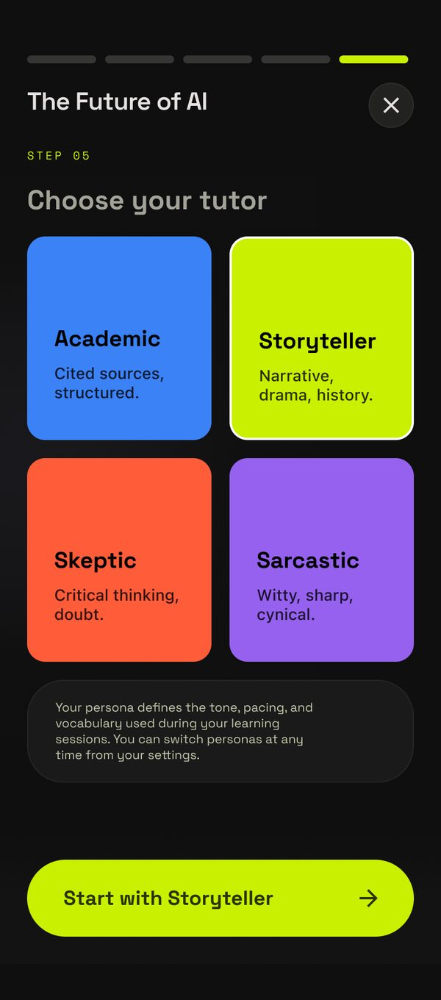
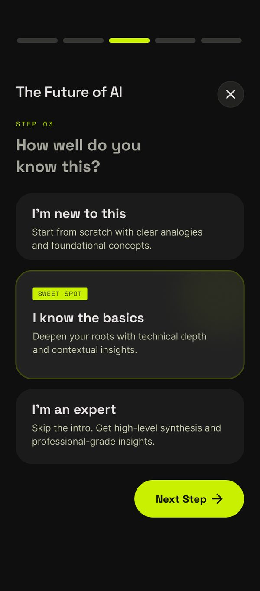
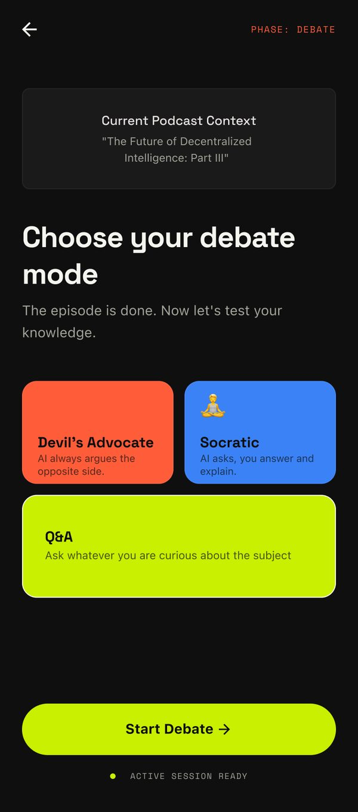
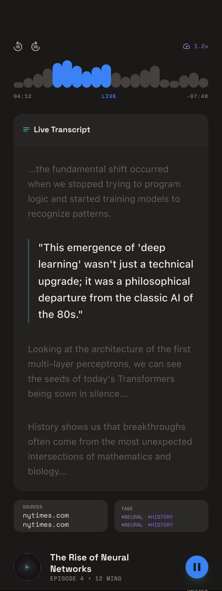
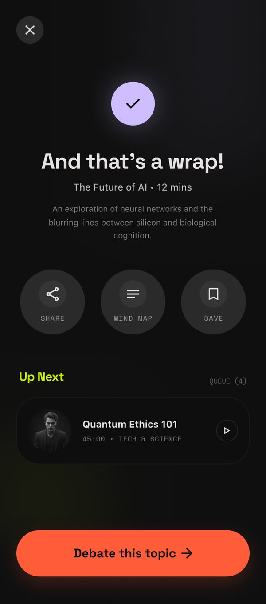
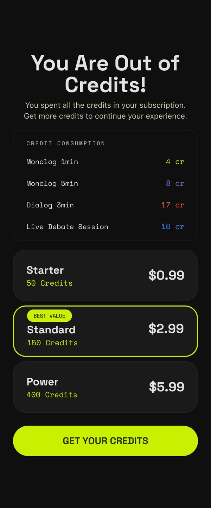

20 teams, picked from 200+ applications, got one weekend in Istanbul to build a subscription app from scratch. Our team, Upside, met there as strangers.
Pody turns the last few hours of news into a short podcast, built around your topics.
Designed and built in a 48-hour hackathon. We pivoted 20 hours in.
“What did I miss today?” Catching up means an hour of scrolling and reading that busy people don’t have.
UI/UX and all the creative: logo, App Store screenshots, pitch deck.
Shipped to the App Store in 48 hours. One of 6 finalists from 200+ applications.
Staying informed means scrolling X and jumping between news sites. Busy 25–40-year-old professionals want the news, but not the hour it takes.
More news than anyone can read, from dozens of sources.
Pody scans X and the web for you, and keeps only the last 6 hours.
5 minutes in the car, not 45 for a podcast.
Episodes are 1, 3 or 5 minutes, made for your topic.
Keeping up feels like a job, not a habit.
You listen instead, with one voice or two.
One tap. Your topics. Your voice.
20 teams, picked from 200+ applications, got one weekend in Istanbul to build a subscription app from scratch. Our team, Upside, met there as strangers.
Growth marketing
iOS developers
UI/UX and all creative
Short lessons on any subject, with a tutor and a level for each learner.
So about 20 hours in, we pointed the same engine at the news.



↳ A coded replay of the real flow. The episode text comes from my Figma file.
“Sweet Spot” marks the middle option.
Grey until you pick, then lime.
Each narrator keeps one colour everywhere.
Minimise generation and Home keeps the progress.
↳ My Figma onboarding frames, replayed in order.
When an episode ends, Pody invites you to debate it out loud.


| Duration | Monolog | Dialog |
|---|---|---|
| 1 min | 4 cr | 8 cr |
| 3 min | 6 cr | 17 cr |
| 5 min | 8 cr | 25 cr |
